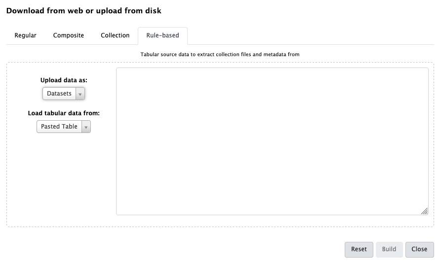

Group tags for complex experimental designs
 Marius van den Beek
Marius van den BeekOverview
question Questionsobjectives Objectives
What are group tags?
How can I use group tags to perform multi-factor analyses with collections
Learn how to set group tags
Learn how to select group tags in tools
time Time estimation: 10 minutes
last_modification Last modification: Jan 6, 2021
Introduction
Advanced uses of Galaxy often require the use of dataset collections, which can contain between one and tens of thousands of datasets. Grouping datasets in this way has numerous advantages:
- It is easy to represent a single collection in the History
- Dataset names (“Element Identifiers”) are immutable and preserved
- Collections can be split and nested in arbitrary ways
While collections can be split in any way, doing so for multi-factor analysis quickly becomes cumbersome and messy. An alternative is to label collection elements with special group tags. These tags can be displayed in the Tool form, allowing users to select subsets of collections.
This tutorial outlines how to set and use group tags with the DESeq2 tool. For a more detailed description and background for differential expression testing see the Reference-based RNA-Seq data analysis.
Agenda
In this tutorial, we will cover:
Setting group tags using the apply rules tool
There are three ways to set group tags:
- Using the rule builder / apply_rules tool
- Using the “Tag elements from file” tool
- Manually adding dataset tags with the prefix
group:
We will use the first two methods in this tutorial. The second method works at any step during the analysis.
Set group tags during upload
hands_on Hands-on: Set group tags during upload
Create a new history for this tutorial
tip Tip: Creating a new history
Click the new-history icon at the top of the history panel
If the new-history is missing:
- Click on the galaxy-gear icon (History options) on the top of the history panel
- Select the option Create New from the menu
- Open the Galaxy Upload Manager (galaxy-upload on the top-right of the tool panel)
Click on Rule-based on the top

As you can see in this dialog, data can be selected from a history dataset or pasted in directly
- Set Upload data as: to
Collection(s)Paste the following links into the text box
https://zenodo.org/record/1185122/files/GSM461176_untreat_single.counts https://zenodo.org/record/1185122/files/GSM461177_untreat_paired.counts https://zenodo.org/record/1185122/files/GSM461178_untreat_paired.counts https://zenodo.org/record/1185122/files/GSM461179_treat_single.counts https://zenodo.org/record/1185122/files/GSM461180_treat_paired.counts https://zenodo.org/record/1185122/files/GSM461181_treat_paired.counts https://zenodo.org/record/1185122/files/GSM461182_untreat_single.counts- Click Build
- We will add a regex that creates 3 new columns with accession, treatment and library type:
- Click on the Column button and then Using a Regular Expression
- Select Create columns matching expression groups
- Paste
.*(GSM.*)_(.*)_(.*).countsin “Regular Expression”- Set “Number of Groups” to 3
Click on Apply
We should have now a table with 4 columns: link, sample name, treatment, sequencing type
- Click on Rules and then Add / Modify Column Definitions
- Click on Add Definition and select:
- “URL”: Column A
- “List Identifiers”: Column B
- “Group Tags”: Columns C and D
- Click Apply
- Enter a name for the new collection
- Click Build
Expand the generated collection and the files in it and check their names and tags

Set group tags using the “Tag elements from file” tool
We now want to add group tags using the “Tag elements from file” tool.
hands_on Hands-on: Upload and create a collection
- Create a new history for this tutorial
Import the following files
https://zenodo.org/record/1185122/files/GSM461176_untreat_single.counts https://zenodo.org/record/1185122/files/GSM461177_untreat_paired.counts https://zenodo.org/record/1185122/files/GSM461178_untreat_paired.counts https://zenodo.org/record/1185122/files/GSM461179_treat_single.counts https://zenodo.org/record/1185122/files/GSM461180_treat_paired.counts https://zenodo.org/record/1185122/files/GSM461181_treat_paired.counts https://zenodo.org/record/1185122/files/GSM461182_untreat_single.countstip Tip: Importing data via links
- Copy the link location
Open the Galaxy Upload Manager (galaxy-upload on the top-right of the tool panel)
- Select Paste/Fetch Data
Paste the link into the text field
Press Start
- Close the window
By default, Galaxy uses the URL as the name, so rename the files with a more useful name.
- Click on the galaxy-selector icon (Operations on multiple datasets)
- Check all new datasets
- Click on For all selected… and then Build Dataset List
- Enter a name for the new collection and click Create list
We have now a collection with our files. We can now either upload a tabular file containing the element identifiers and the tags we want to apply, or we can extract the element identifiers and extract the tags using a Regular Expression. We will do the latter.
hands_on Hands-on: Set group tags using the “Tag elements from file” tool
- Extract element identifiers tool
- param-collection “Dataset collection”: created collection
- Replace Text in entire line tool
- param-file “File to process”: output of Extract element identifiers tool
- In “Replacement”:
- In “1: Replacement”
- “Find pattern”:
(.*)_(.*)_(.*).counts- “Replace with”:
\1_\2_\3.counts\tgroup:\2\tgroup:\3This step add an additional columns that can be used with the
Tag elements from filetoolChange the datatype to
tabulartip Tip: Changing the datatype
- Click on the galaxy-pencil pencil icon for the dataset to edit its attributes
- In the central panel, click on the galaxy-chart-select-data Datatypes tab on the top
- Select
tabular- Click the Change datatype button
- Tag elements from file tool
- param-collection “Input Collection”: created collection
- param-collection “Tag collection elements according to this file”: output of Replace Text tool
You should now have a properly tagged collection of tabular files that can be used in DESeq2.
Using group tags in tool, e.g. DESeq2
DESeq2 has two modes for specifying factors. One can either select datasets corresponding to factors, or use group tags to specify factors. We will use the grop tags present in our collection to specify factors.
The tool interface will prompt you with the group tags that are available for your inputs:

hands_on Hands-on: Running DESeq2 with group tags
- DESeq2 tool with the following parameters:
- “how”:
Select group tags corresponding to levels
- param-collection “Count file(s) collection”: Generated collection
- In “Factor”:
- In “1: Factor”
- “Specify a factor name”:
Treatment- In “Factor level”:
- In “1: Factor level”:
- “Specify a factor level”:
treat- “Select groups that correspond to this factor level”:
Tags: treat- In “2: Factor level”:
- “Specify a factor level”:
untreat- “Select groups that correspond to this factor level”:
Tags: untreat- param-repeat Click on “Insert Factor” (not on “Insert Factor level”)
- In “2: Factor”
- “Specify a factor name” to
Sequencing- In “Factor level”:
- In “1: Factor level”:
- “Specify a factor level”:
paired- “Select groups that correspond to this factor level”:
Tags: paired- In “2: Factor level”:
- “Specify a factor level”:
single- “Select groups that correspond to this factor level”:
Tags: single- “Files have header?”:
No- “Output normalized counts table”:
Yes
Conclusion
We can select a subset of Collections using the special group tag.
keypoints Key points
Group tags allow complex analyses without reshaping or unhiding datasets in a collection
Feedback
Did you use this material as an instructor? Feel free to give us feedback on how it went.

Citing this Tutorial
- Marius van den Beek, 2021 Group tags for complex experimental designs (Galaxy Training Materials). /training-material/topics/galaxy-interface/tutorials/group-tags/tutorial.html Online; accessed TODAY
- Batut et al., 2018 Community-Driven Data Analysis Training for Biology Cell Systems 10.1016/j.cels.2018.05.012
details BibTeX
@misc{galaxy-interface-group-tags, author = "Marius van den Beek", title = "Group tags for complex experimental designs (Galaxy Training Materials)", year = "2021", month = "01", day = "06" url = "\url{/training-material/topics/galaxy-interface/tutorials/group-tags/tutorial.html}", note = "[Online; accessed TODAY]" } @article{Batut_2018, doi = {10.1016/j.cels.2018.05.012}, url = {https://doi.org/10.1016%2Fj.cels.2018.05.012}, year = 2018, month = {jun}, publisher = {Elsevier {BV}}, volume = {6}, number = {6}, pages = {752--758.e1}, author = {B{\'{e}}r{\'{e}}nice Batut and Saskia Hiltemann and Andrea Bagnacani and Dannon Baker and Vivek Bhardwaj and Clemens Blank and Anthony Bretaudeau and Loraine Brillet-Gu{\'{e}}guen and Martin {\v{C}}ech and John Chilton and Dave Clements and Olivia Doppelt-Azeroual and Anika Erxleben and Mallory Ann Freeberg and Simon Gladman and Youri Hoogstrate and Hans-Rudolf Hotz and Torsten Houwaart and Pratik Jagtap and Delphine Larivi{\`{e}}re and Gildas Le Corguill{\'{e}} and Thomas Manke and Fabien Mareuil and Fidel Ram{\'{\i}}rez and Devon Ryan and Florian Christoph Sigloch and Nicola Soranzo and Joachim Wolff and Pavankumar Videm and Markus Wolfien and Aisanjiang Wubuli and Dilmurat Yusuf and James Taylor and Rolf Backofen and Anton Nekrutenko and Björn Grüning}, title = {Community-Driven Data Analysis Training for Biology}, journal = {Cell Systems} }